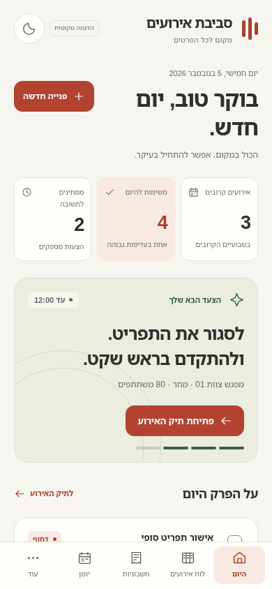
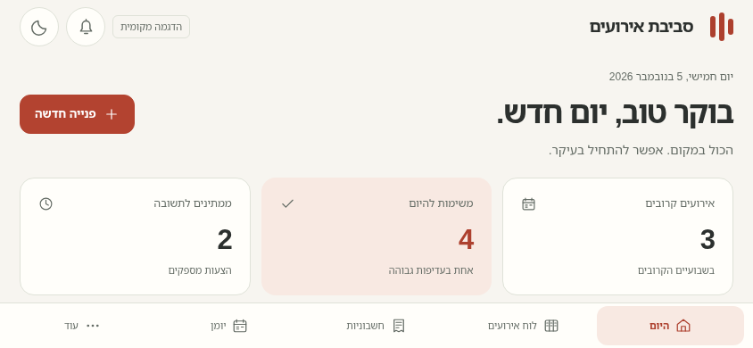

היום · טלפון לאורך · בהיר
תיעוד הבדיקה
העיצוב עבר דרך.
צילומים ממשיים, ביקורת ותיקונים בכל סבב.




״קרוב״ הוא חלון בגודל המקורי. ״רחוק״ הוא צילום כל הדף המוקטן ל־50%. בתיקיות הסבבים נמצאים גם צילומי תקריב ב־150%, לשוניות, טפסים וגיליונות השוואה.